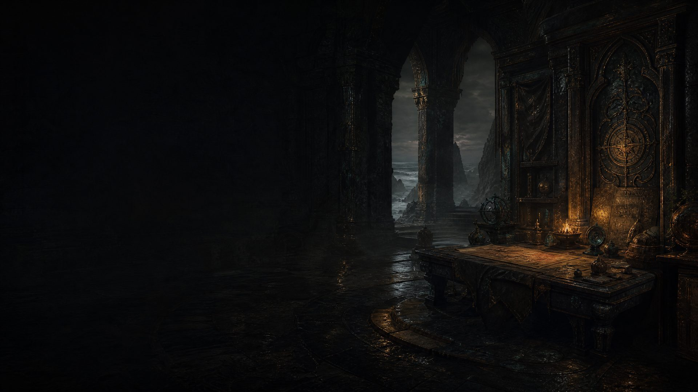
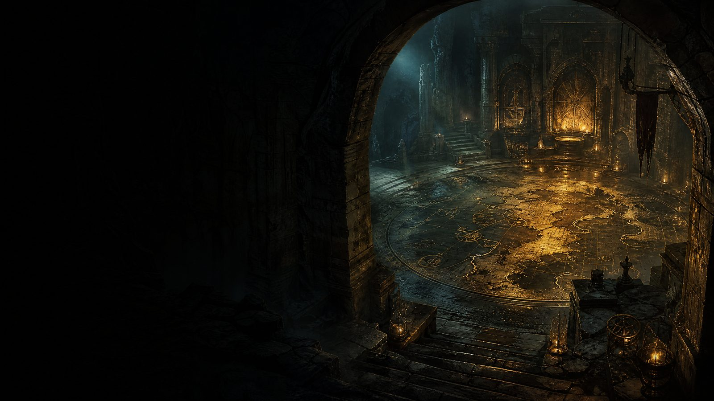
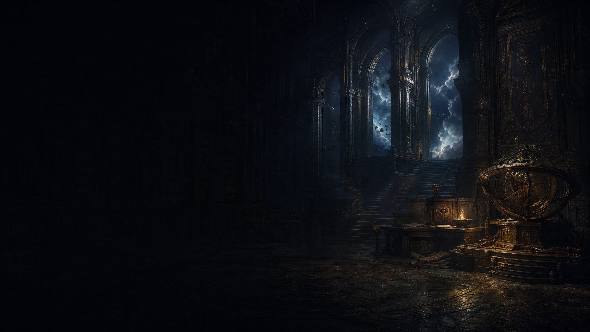
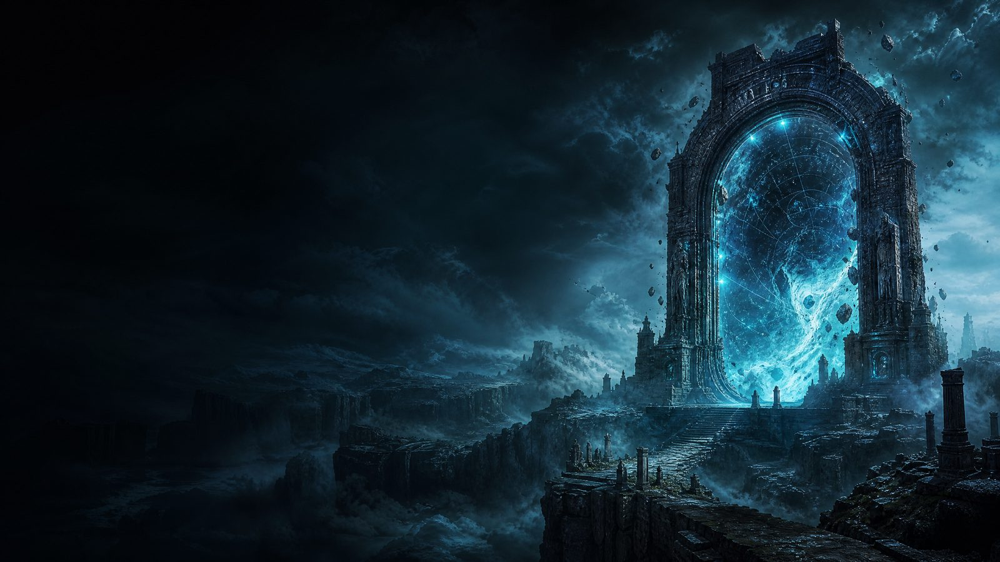
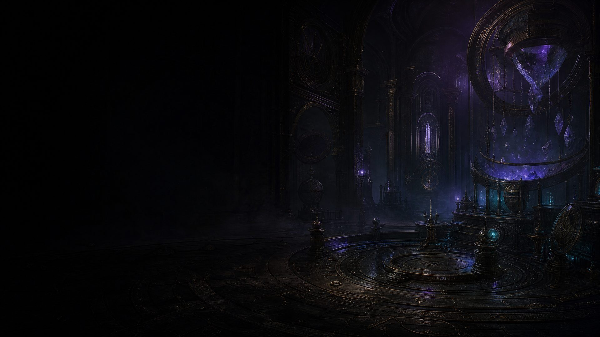
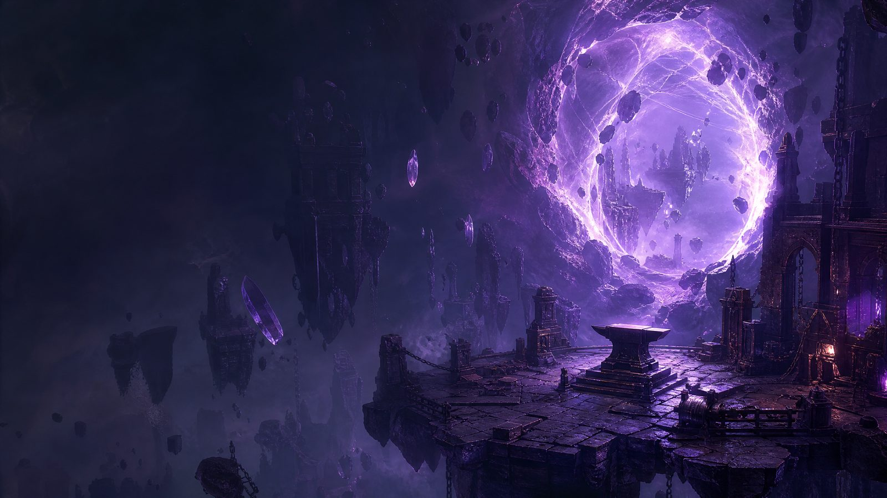
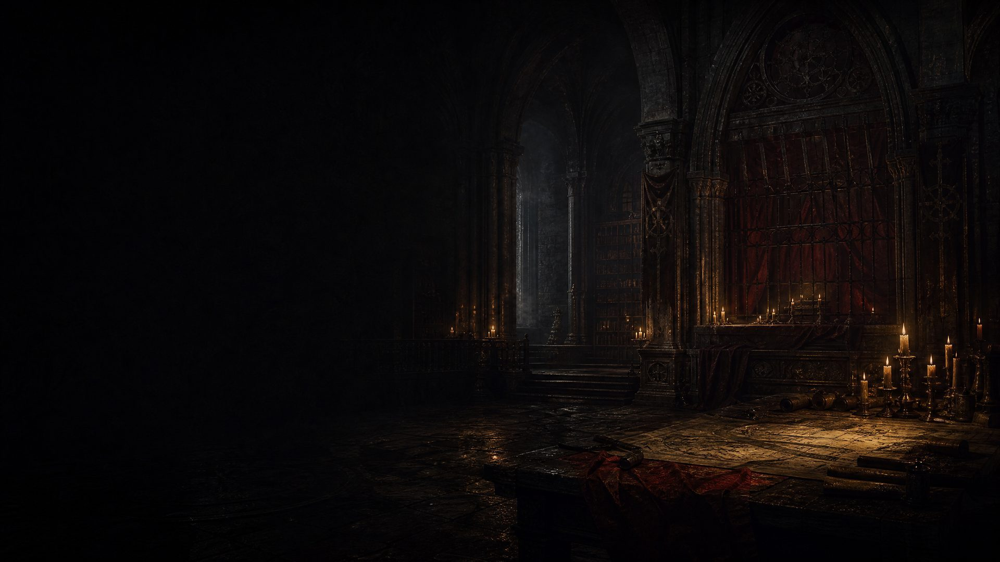
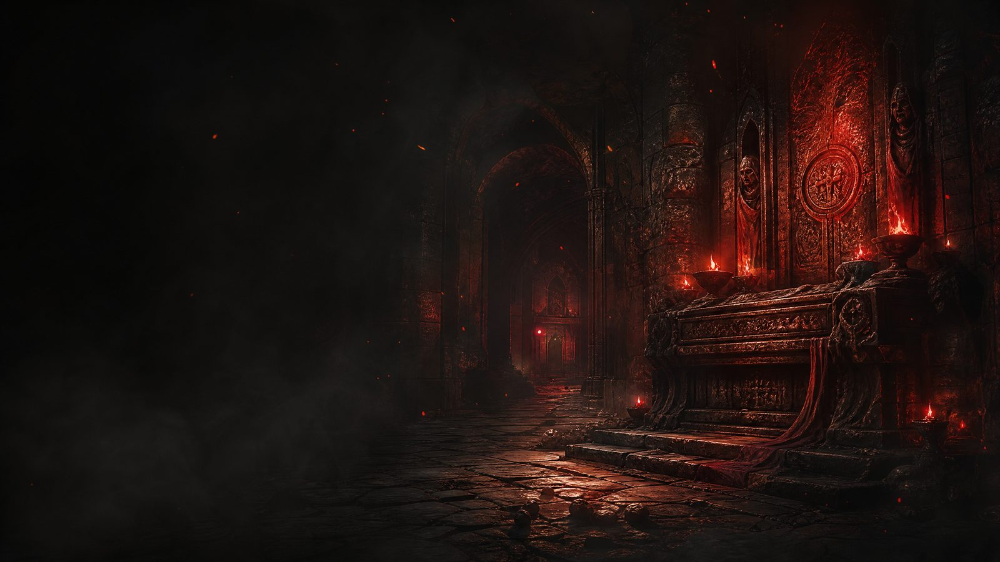
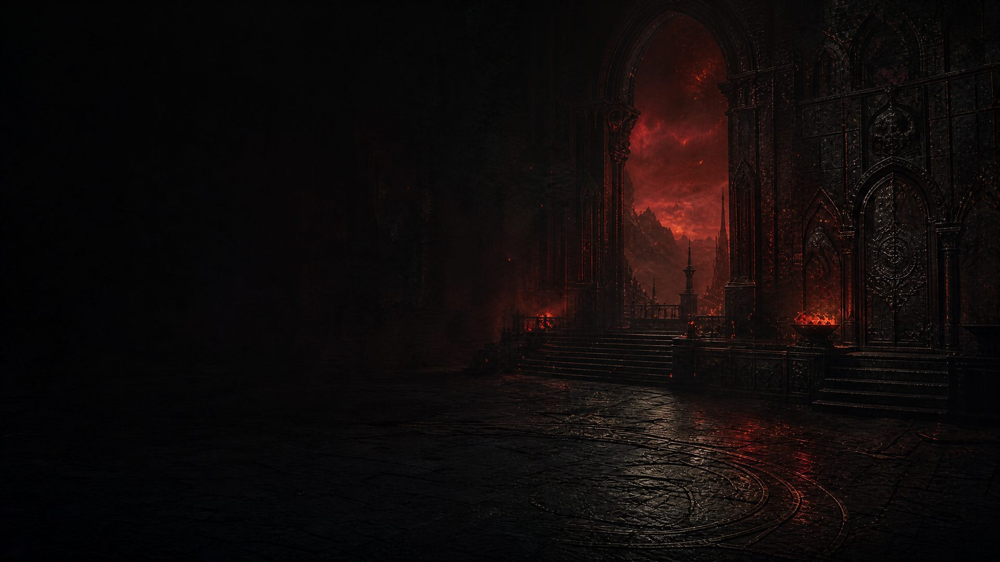
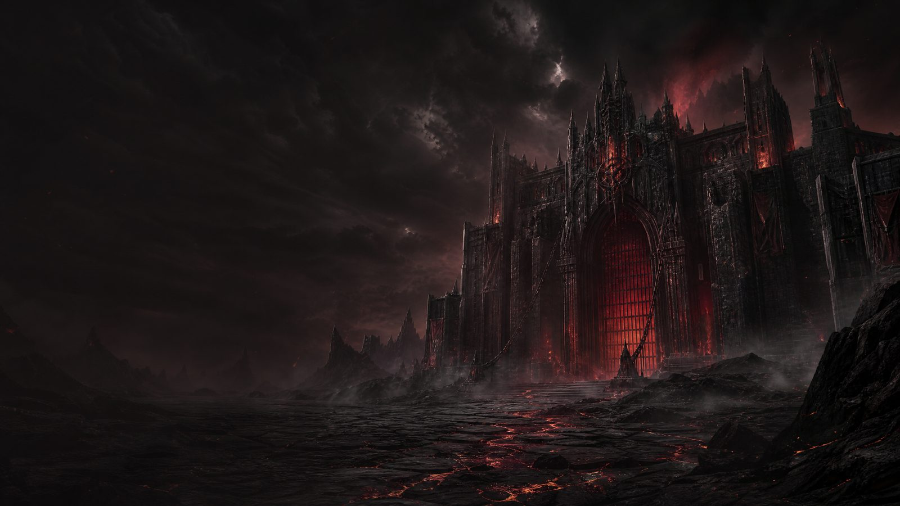

Costruisci il tuo percorso attraverso Wraeclast
Build, progressione e strumenti raccolti in un capitolo consultabile prima di entrare in mappa.
Caricamento dei punti di partenza e delle ricerche esterne…
💾 Le Mie Build Personali
🛡️ Top Build Endgame Lega 3.29 (Attuale)
- In attesa di sincronizzazione...
🚀 Top Build Leveling Lega 3.29 (Attuale)
- In attesa di sincronizzazione...

Guida PoE 1: Oggetti Unici per Leveling
Un archivio visivo di unici per riconoscere upgrade utili, requisiti e destinazioni di classe.
🛡️ Elmi (Helmets)
-
 Goldrim📈 Liv. 1💰 ~2 C🕳️ Max 4La scelta predefinita per il leveling, sistema le difese dall'Atto 1. 🎯 Tutte le classi.Statistiche dell'Oggetto+30-40% a tutte le Resistenze Elementali10% Rarità degli Oggetti trovatiAumenta Evasione (Evasion)
Goldrim📈 Liv. 1💰 ~2 C🕳️ Max 4La scelta predefinita per il leveling, sistema le difese dall'Atto 1. 🎯 Tutte le classi.Statistiche dell'Oggetto+30-40% a tutte le Resistenze Elementali10% Rarità degli Oggetti trovatiAumenta Evasione (Evasion) -
 Thrillsteel📈 Liv. 18💰 ~1 Alch🕳️ Max 4Molto amato dagli speed-runners, fornisce enormi buff alla velocità. 🎯 Ranger, Duelist, Marauder.Statistiche dell'OggettoHai Assalto (Onslaught) costante+20% Velocità di Movimento, Attacco e Lancio
Thrillsteel📈 Liv. 18💰 ~1 Alch🕳️ Max 4Molto amato dagli speed-runners, fornisce enormi buff alla velocità. 🎯 Ranger, Duelist, Marauder.Statistiche dell'OggettoHai Assalto (Onslaught) costante+20% Velocità di Movimento, Attacco e Lancio
👕 Armature Torso (Chest)
-
 Tabula Rasa📈 Liv. 1💰 ~12 C🕳️ 6 FissiL'armatura per eccellenza per livellare: un 6-Link bianco dal livello 1. 🎯 Tutte le classi.Statistiche dell'OggettoNessuna statistica difensivaPossiede sempre 6 Incavi Bianchi tutti collegati (6-Link)
Tabula Rasa📈 Liv. 1💰 ~12 C🕳️ 6 FissiL'armatura per eccellenza per livellare: un 6-Link bianco dal livello 1. 🎯 Tutte le classi.Statistiche dell'OggettoNessuna statistica difensivaPossiede sempre 6 Incavi Bianchi tutti collegati (6-Link) -
 Skin of the Loyal📈 Liv. 1💰 ~30 C🕳️ 6 FissiMoltiplica a dismisura le difese e il danno base se hai i colori giusti. 🎯 Tutte le classi.Statistiche dell'Oggetto+1 al Livello delle Gemme Incastonate100% Difese Globali aumentateI colori dei castoni non possono essere modificati!
Skin of the Loyal📈 Liv. 1💰 ~30 C🕳️ 6 FissiMoltiplica a dismisura le difese e il danno base se hai i colori giusti. 🎯 Tutte le classi.Statistiche dell'Oggetto+1 al Livello delle Gemme Incastonate100% Difese Globali aumentateI colori dei castoni non possono essere modificati!
🧤 Guanti (Gloves)
-
 Lochtonial Caress📈 Liv. 1💰 ~1 AlchForniscono ottime statistiche offensive e cariche passive. 🎯 Tutte le classi.Statistiche dell'Oggetto10-15% Velocità di Attacco e Lancio10% probabilità di Carica all'Uccisione
Lochtonial Caress📈 Liv. 1💰 ~1 AlchForniscono ottime statistiche offensive e cariche passive. 🎯 Tutte le classi.Statistiche dell'Oggetto10-15% Velocità di Attacco e Lancio10% probabilità di Carica all'Uccisione -
 Hrimsorrow📈 Liv. 9💰 ~1 AlchSpesso usati per build che vogliono convertire il danno fin da subito. 🎯 Shadow, Ranger, Witch.Statistiche dell'Oggetto100% del Danno Fisico viene convertito in Danno da Freddo+20-30 ForzaAggiunge Danni Base da Freddo
Hrimsorrow📈 Liv. 9💰 ~1 AlchSpesso usati per build che vogliono convertire il danno fin da subito. 🎯 Shadow, Ranger, Witch.Statistiche dell'Oggetto100% del Danno Fisico viene convertito in Danno da Freddo+20-30 ForzaAggiunge Danni Base da Freddo -
 Sadima's Touch📈 Liv. 9💰 ~1 AlchFunzionano particolarmente bene per archi o attacchi elementali. 🎯 Ranger, Duelist.Statistiche dell'OggettoAggiunge Danni Base da Fuoco e Fulmine agli attacchi12-16% Quantità (Quantity) di Oggetti trovati
Sadima's Touch📈 Liv. 9💰 ~1 AlchFunzionano particolarmente bene per archi o attacchi elementali. 🎯 Ranger, Duelist.Statistiche dell'OggettoAggiunge Danni Base da Fuoco e Fulmine agli attacchi12-16% Quantità (Quantity) di Oggetti trovati
🥾 Stivali (Boots)
-
 Wanderlust📈 Liv. 1💰 ~1 AlchLa scelta più accessibile. Evitano fastidiosissime morti per congelamento. 🎯 Tutte le classi.Statistiche dell'OggettoSei Immune al Congelamento20% Velocità di MovimentoRigenerazione Mana aumentata
Wanderlust📈 Liv. 1💰 ~1 AlchLa scelta più accessibile. Evitano fastidiosissime morti per congelamento. 🎯 Tutte le classi.Statistiche dell'OggettoSei Immune al Congelamento20% Velocità di MovimentoRigenerazione Mana aumentata -
 Seven-League Step📈 Liv. 1💰 LussoOpzione di lusso per correre all'impazzata attraverso gli Atti. 🎯 Speedrunners.Statistiche dell'Oggetto50% Velocità di Movimento Massiccia(Nessuna altra statistica difensiva)
Seven-League Step📈 Liv. 1💰 LussoOpzione di lusso per correre all'impazzata attraverso gli Atti. 🎯 Speedrunners.Statistiche dell'Oggetto50% Velocità di Movimento Massiccia(Nessuna altra statistica difensiva)
📿 Amuleti (Amulets)
-
 Sidhebreath📈 Liv. 1💰 ~1 CLa scelta definitiva dal livello 1 se intendi usare evocazioni. 🎯 Witch, Templar.Statistiche dell'OggettoI Minion hanno +10-15% Vita e DannoI Minion hanno +10-15% Velocità di Movimento
Sidhebreath📈 Liv. 1💰 ~1 CLa scelta definitiva dal livello 1 se intendi usare evocazioni. 🎯 Witch, Templar.Statistiche dell'OggettoI Minion hanno +10-15% Vita e DannoI Minion hanno +10-15% Velocità di Movimento -
 Atziri's Foible📈 Liv. 16💰 ~10 CFornisce moltissimo Mana e risolve tutti i problemi di requisiti. 🎯 Templar, Witch, Scion.Statistiche dell'Oggetto+100 Mana Massimo e Altissima RigenerazioneI Requisiti degli Attributi di Gemme e Oggetti sono ridotti del 25%
Atziri's Foible📈 Liv. 16💰 ~10 CFornisce moltissimo Mana e risolve tutti i problemi di requisiti. 🎯 Templar, Witch, Scion.Statistiche dell'Oggetto+100 Mana Massimo e Altissima RigenerazioneI Requisiti degli Attributi di Gemme e Oggetti sono ridotti del 25% -
 Carnage Heart / Daresso's Salute📈 Liv. 20💰 ~3 COttima scelta per i combattenti Melee che sfruttano il "Life Leech". 🎯 Duelist, Marauder.Statistiche (Carnage Heart)+20-40 a tutti gli Attributi50% Recupero Vita aumentato dal Leech30-40% Danno Globale extra mentre Rubi Vita
Carnage Heart / Daresso's Salute📈 Liv. 20💰 ~3 COttima scelta per i combattenti Melee che sfruttano il "Life Leech". 🎯 Duelist, Marauder.Statistiche (Carnage Heart)+20-40 a tutti gli Attributi50% Recupero Vita aumentato dal Leech30-40% Danno Globale extra mentre Rubi Vita -
 Astramentis📈 Liv. 20💰 ~20 CTi permette di ignorare completamente i requisiti degli oggetti. 🎯 Scion, Inquisitor.Statistiche dell'Oggetto+80-100 a TUTTI gli Attributi base
Astramentis📈 Liv. 20💰 ~20 CTi permette di ignorare completamente i requisiti degli oggetti. 🎯 Scion, Inquisitor.Statistiche dell'Oggetto+80-100 a TUTTI gli Attributi base -
 Sacrificial Heart📈 Liv. 32💰 ~5 CPerfetto per caricare le potentissime abilità Vaal in un baleno. 🎯 Ranger, Shadow.Statistiche dell'OggettoAggiunge massicci danni elementali extra agli attacchiGuadagni Anime Vaal extra velocemente
Sacrificial Heart📈 Liv. 32💰 ~5 CPerfetto per caricare le potentissime abilità Vaal in un baleno. 🎯 Ranger, Shadow.Statistiche dell'OggettoAggiunge massicci danni elementali extra agli attacchiGuadagni Anime Vaal extra velocemente
💍 Anelli (Rings)
-
 Berek's Grip / Pass / Respite📈 Liv. 20💰 Da ~2c a ~60cLa versione Grip (mostrata) è per il fulmine, Respite per fuoco, Pass per freddo. 🎯 Witch, Templar, Shadow.Statistiche dell'OggettoDanno Magico Elementale aumentatoGrip: Ruba Vita e Mana da nemici Congelati/ScioccatiRespite: Diffonde Ustioni (Ignite) ai nemici vicini alla morte
Berek's Grip / Pass / Respite📈 Liv. 20💰 Da ~2c a ~60cLa versione Grip (mostrata) è per il fulmine, Respite per fuoco, Pass per freddo. 🎯 Witch, Templar, Shadow.Statistiche dell'OggettoDanno Magico Elementale aumentatoGrip: Ruba Vita e Mana da nemici Congelati/ScioccatiRespite: Diffonde Ustioni (Ignite) ai nemici vicini alla morte -
 Le Heup of All📈 Liv. 24💰 ~4 CUn anello "coltellino svizzero" perfetto per tappare ogni buco nella build. 🎯 Tutte le classi.Statistiche dell'Oggetto10-30% Danno Globale aumentato10-30% a Tutte le Resistenze Elementali+10-30 a Tutti gli Attributi
Le Heup of All📈 Liv. 24💰 ~4 CUn anello "coltellino svizzero" perfetto per tappare ogni buco nella build. 🎯 Tutte le classi.Statistiche dell'Oggetto10-30% Danno Globale aumentato10-30% a Tutte le Resistenze Elementali+10-30 a Tutti gli Attributi -
 Statistiche dell'OggettoRimuove 4-8 Mana dal Costo Base delle Abilità8% del Danno Subito viene recuperato passivamente come Mana
Statistiche dell'OggettoRimuove 4-8 Mana dal Costo Base delle Abilità8% del Danno Subito viene recuperato passivamente come Mana -
 Thief's Torment📈 Liv. 30💰 ~5 CImpedisce l'uso del secondo anello ma garantisce un "Life/Mana Gain on Hit" strepitoso. 🎯 Ranger, Duelist, Shadow.Statistiche dell'Oggetto+40-60 Vita e +30 Mana guadagnati all'istante per ogni Nemico Colpito!Non puoi equipaggiare un altro Anello
Thief's Torment📈 Liv. 30💰 ~5 CImpedisce l'uso del secondo anello ma garantisce un "Life/Mana Gain on Hit" strepitoso. 🎯 Ranger, Duelist, Shadow.Statistiche dell'Oggetto+40-60 Vita e +30 Mana guadagnati all'istante per ogni Nemico Colpito!Non puoi equipaggiare un altro Anello
🥋 Cinture (Belts)
-
 Darkness Enthroned📈 Liv. 1🕳️ 2 AbissaliAumenta massicciamente l'effetto dei Gioielli Abissali incastonati al suo interno. 🎯 Tutte le classi.Statistiche dell'OggettoPossiede 2 Incavi Abissali (Abyssal Sockets)L'Effetto dei Gioielli in questa cintura è aumentato del 50-100%
Darkness Enthroned📈 Liv. 1🕳️ 2 AbissaliAumenta massicciamente l'effetto dei Gioielli Abissali incastonati al suo interno. 🎯 Tutte le classi.Statistiche dell'OggettoPossiede 2 Incavi Abissali (Abyssal Sockets)L'Effetto dei Gioielli in questa cintura è aumentato del 50-100% -
 String of Servitude📈 Liv. 1💰 ~2 CLa variante con le "Resistenze Elementali" cap in automatico le difese per tutta la campagna. 🎯 Tutte le classi.Statistiche dell'OggettoI Modificatori Impliciti Corrotti sono Triplicati(Un roll base del +15% a tutte le resistenze diventerà un clamoroso +45%!)
String of Servitude📈 Liv. 1💰 ~2 CLa variante con le "Resistenze Elementali" cap in automatico le difese per tutta la campagna. 🎯 Tutte le classi.Statistiche dell'OggettoI Modificatori Impliciti Corrotti sono Triplicati(Un roll base del +15% a tutte le resistenze diventerà un clamoroso +45%!) -
 Meginord's Girdle📈 Liv. 8💰 ~1 AlchOttima spinta a Forza e Danno fisico per i primi livelli. 🎯 Marauder, Duelist.Statistiche dell'Oggetto+25-50 ForzaAggiunge Danni Fisici puri agli Attacchi10% Vita Massima aumentata
Meginord's Girdle📈 Liv. 8💰 ~1 AlchOttima spinta a Forza e Danno fisico per i primi livelli. 🎯 Marauder, Duelist.Statistiche dell'Oggetto+25-50 ForzaAggiunge Danni Fisici puri agli Attacchi10% Vita Massima aumentata -
 Prismweave📈 Liv. 25💰 ~1 CPerfetta per build che scalano i danni elementali sparando frecce o tramite attacchi. 🎯 Ranger, Duelist.Statistiche dell'OggettoAggiunge grandi quantità piatte di Danno Base (Fuoco, Freddo e Fulmine) ai tuoi Attacchi armati
Prismweave📈 Liv. 25💰 ~1 CPerfetta per build che scalano i danni elementali sparando frecce o tramite attacchi. 🎯 Ranger, Duelist.Statistiche dell'OggettoAggiunge grandi quantità piatte di Danno Base (Fuoco, Freddo e Fulmine) ai tuoi Attacchi armati -
 Replica Prismweave📈 Liv. 25💰 ~10 CLa controparte per i maghi. Dona un burst di danni elementali impressionante. 🎯 Witch, Templar, Shadow.Statistiche dell'OggettoAggiunge enormi quantità piatte di Danno da Fuoco, Freddo e Fulmine unicamente ai tuoi Incantesimi (Spells)
Replica Prismweave📈 Liv. 25💰 ~10 CLa controparte per i maghi. Dona un burst di danni elementali impressionante. 🎯 Witch, Templar, Shadow.Statistiche dell'OggettoAggiunge enormi quantità piatte di Danno da Fuoco, Freddo e Fulmine unicamente ai tuoi Incantesimi (Spells)
⚔️ Armi a Una Mano (One-Handed Weapons)
-
 Lifesprig📈 Liv. 1💰 ~1 Alch🕳️ Max 3Eccezionale bacchetta magica. Scala i danni immensamente grazie al livello extra gemme. 🎯 Witch, Templar, Shadow.Statistiche dell'Oggetto+1 al Livello delle Gemme Incantesimo incastonate in questo oggettoRigenera 8-12 Vita a ogni uso di Magia
Lifesprig📈 Liv. 1💰 ~1 Alch🕳️ Max 3Eccezionale bacchetta magica. Scala i danni immensamente grazie al livello extra gemme. 🎯 Witch, Templar, Shadow.Statistiche dell'Oggetto+1 al Livello delle Gemme Incantesimo incastonate in questo oggettoRigenera 8-12 Vita a ogni uso di Magia -
 Axiom Perpetuum📈 Liv. 10💰 ~1 C🕳️ Max 3Spesso impugnato doppio (Dual Wield), moltiplica la probabilità di colpo critico. 🎯 Inquisitor/Templar, Witch.Statistiche dell'OggettoFino a +110% Probabilità di Colpo Critico per gli IncantesimiAggiunge Base Danni da Fuoco e Freddo agli Incantesimi
Axiom Perpetuum📈 Liv. 10💰 ~1 C🕳️ Max 3Spesso impugnato doppio (Dual Wield), moltiplica la probabilità di colpo critico. 🎯 Inquisitor/Templar, Witch.Statistiche dell'OggettoFino a +110% Probabilità di Colpo Critico per gli IncantesimiAggiunge Base Danni da Fuoco e Freddo agli Incantesimi -
 The Poet's Pen📈 Liv. 12💰 ~15 C🕳️ Max 3L'arma del level-clearing per eccellenza. Lancia magie in automatico ("Auto-Trigger") attaccando. 🎯 Build Trigger (es. Volatile Dead).Statistiche dell'OggettoLancia le Magie incastonate nell'arma in automatico quando Attacchi+1 al Livello delle Gemme in quest'arma per ogni 25 Livelli del Giocatore
The Poet's Pen📈 Liv. 12💰 ~15 C🕳️ Max 3L'arma del level-clearing per eccellenza. Lancia magie in automatico ("Auto-Trigger") attaccando. 🎯 Build Trigger (es. Volatile Dead).Statistiche dell'OggettoLancia le Magie incastonate nell'arma in automatico quando Attacchi+1 al Livello delle Gemme in quest'arma per ogni 25 Livelli del Giocatore -
 Cerberus Limb📈 Liv. 47💰 ~1 C🕳️ Max 3Da usare con uno Scudo corazzato per difese impareggiabili, o in dual-wield. 🎯 Witch, Templar/Inquisitor.Statistiche dell'Oggetto70-100% Danno Magico (Spell Damage) aumentatoRuba Vita istantanea dagli Incantesimi se hai Bloccato un colpo di recente+1 Scudo Energetico ogni 5 punti Armatura posseduti dallo Scudo
Cerberus Limb📈 Liv. 47💰 ~1 C🕳️ Max 3Da usare con uno Scudo corazzato per difese impareggiabili, o in dual-wield. 🎯 Witch, Templar/Inquisitor.Statistiche dell'Oggetto70-100% Danno Magico (Spell Damage) aumentatoRuba Vita istantanea dagli Incantesimi se hai Bloccato un colpo di recente+1 Scudo Energetico ogni 5 punti Armatura posseduti dallo Scudo
🪓 Armi a Due Mani (Two-Handed Weapons)
-
 Oni-Goroshi📈 Liv. 2💰 ~1 Divine🕳️ 6 FissiSpada rarissima: il suo danno base scala magicamente col tuo livello. Unica nel suo genere. 🎯 Duelist, Marauder, Shadow, Scion.Statistiche dell'OggettoCade SEMPRE con 6 Incavi e 6 Collegamenti completi!Buff 'Her Embrace' quando infiammi i nemici: massicci Danni Fisici ed Elementali
Oni-Goroshi📈 Liv. 2💰 ~1 Divine🕳️ 6 FissiSpada rarissima: il suo danno base scala magicamente col tuo livello. Unica nel suo genere. 🎯 Duelist, Marauder, Shadow, Scion.Statistiche dell'OggettoCade SEMPRE con 6 Incavi e 6 Collegamenti completi!Buff 'Her Embrace' quando infiammi i nemici: massicci Danni Fisici ed Elementali -
 Limbsplit📈 Liv. 13💰 ~1 Alch🕳️ Max 6Un'ascia brutale per i primi livelli, ottima per distruggere i boss a bassa vita. 🎯 Marauder, Duelist (Melee Fisico).Statistiche dell'Oggetto+1 al Livello delle Gemme Melee incastonateColpo di Grazia (Culling Strike): uccide all'istante i nemici con meno del 10% di vitaOttimo Danno Fisico base
Limbsplit📈 Liv. 13💰 ~1 Alch🕳️ Max 6Un'ascia brutale per i primi livelli, ottima per distruggere i boss a bassa vita. 🎯 Marauder, Duelist (Melee Fisico).Statistiche dell'Oggetto+1 al Livello delle Gemme Melee incastonateColpo di Grazia (Culling Strike): uccide all'istante i nemici con meno del 10% di vitaOttimo Danno Fisico base -
 Edge of Madness📈 Liv. 22💰 ~1 C🕳️ Max 6Spada a due mani perfetta per build basate sul danno da Caos. Scala automaticamente col tuo livello! 🎯 Shadow, Ranger, Duelist.Statistiche dell'Oggetto+1-2 Danni Base da Caos aggiunti per ogni Livello del Giocatore1% Danno da Caos aumentato per ogni Livello del Giocatore
Edge of Madness📈 Liv. 22💰 ~1 C🕳️ Max 6Spada a due mani perfetta per build basate sul danno da Caos. Scala automaticamente col tuo livello! 🎯 Shadow, Ranger, Duelist.Statistiche dell'Oggetto+1-2 Danni Base da Caos aggiunti per ogni Livello del Giocatore1% Danno da Caos aumentato per ogni Livello del Giocatore -
 Geofri's Baptism📈 Liv. 27💰 ~1 C🕳️ Max 6Un martello devastante che risolve per sempre il problema della precisione (Accuracy) a inizio gioco. 🎯 Marauder, Templar, Duelist.Statistiche dell'OggettoTecnica Risoluta (Resolute Technique): I tuoi attacchi non mancano mai il bersaglioNota: Non puoi sferrare Colpi CriticiMassiccio Danno Fisico (+200% circa) e Stordimento aumentato
Geofri's Baptism📈 Liv. 27💰 ~1 C🕳️ Max 6Un martello devastante che risolve per sempre il problema della precisione (Accuracy) a inizio gioco. 🎯 Marauder, Templar, Duelist.Statistiche dell'OggettoTecnica Risoluta (Resolute Technique): I tuoi attacchi non mancano mai il bersaglioNota: Non puoi sferrare Colpi CriticiMassiccio Danno Fisico (+200% circa) e Stordimento aumentato
🧪 Fiaschette (Flasks)
-
 Quicksilver Flask (Base)📈 Liv. 4💰 GratisAnche se non è Unica, è l'oggetto più importante del gioco. Tienine sempre un paio attive! 🎯 Tutte le classi.Statistiche dell'Oggetto+40% Velocità di Movimento durante l'effettoConsiglio: Cerca sempre modificatori "Adrenaline" per extra velocità!
Quicksilver Flask (Base)📈 Liv. 4💰 GratisAnche se non è Unica, è l'oggetto più importante del gioco. Tienine sempre un paio attive! 🎯 Tutte le classi.Statistiche dell'Oggetto+40% Velocità di Movimento durante l'effettoConsiglio: Cerca sempre modificatori "Adrenaline" per extra velocità! -
 Lavianga's Spirit📈 Liv. 31💰 ~2 CLa pozione definitiva per risolvere i problemi di Mana durante i lunghi combattimenti contro i boss. 🎯 Incantatori e build con abilità costose.Statistiche dell'OggettoLe tue Abilità non costano Mana durante l'effetto della FiaschettaRecupera istantaneamente e abbondantemente Mana
Lavianga's Spirit📈 Liv. 31💰 ~2 CLa pozione definitiva per risolvere i problemi di Mana durante i lunghi combattimenti contro i boss. 🎯 Incantatori e build con abilità costose.Statistiche dell'OggettoLe tue Abilità non costano Mana durante l'effetto della FiaschettaRecupera istantaneamente e abbondantemente Mana -
 The Wise Oak📈 Liv. 8💰 ~5 COffre difese impenetrabili o danni mostruosi, a patto di saper bilanciare bene le resistenze elementali! 🎯 Tutte le classi.Statistiche dell'Oggetto+35% a Tutte le Resistenze Elementali durante l'effettoIl tuo Danno Penetra la Resistenza corrispondente alla tua Resistenza massima più altaSubisci meno Danno dall'Elemento corrispondente alla tua Resistenza più bassa
The Wise Oak📈 Liv. 8💰 ~5 COffre difese impenetrabili o danni mostruosi, a patto di saper bilanciare bene le resistenze elementali! 🎯 Tutte le classi.Statistiche dell'Oggetto+35% a Tutte le Resistenze Elementali durante l'effettoIl tuo Danno Penetra la Resistenza corrispondente alla tua Resistenza massima più altaSubisci meno Danno dall'Elemento corrispondente alla tua Resistenza più bassa
Guida per Principianti: Crafting & Upgrading (PoE 1)
Una guida pratica per leggere le basi, pianificare gli upgrade e spendere valuta con intenzione.
In Path of Exile non usi "oro" per commerciare o craftare, ma le Currency (Valute). Ognuna ha una funzione specifica. Questa guida spiega le basi.
🔨 Come craftare un oggetto da zero (Step-by-Step)
-
Generalmente, craftare oggetti per l'endgame richiede moltissime risorse. Tuttavia, durante il leveling e l'inizio delle mappe, è vitale sapersi creare un buon pezzo di equipaggiamento (es. una fiaschetta o un anello) usando le basi: Alteration, Regal e Master Crafting.
Step 1: La Base Perfetta. Trova un oggetto con un alto Item Level (ilvl) e base adatta. Se è Magico o Raro con statistiche inutili, usa un Orb of Scouring per renderlo Normale (Bianco).Step 2: Qualità. Usa i Blacksmith's Whetstone (Armi) o Armourer's Scrap (Armature) per portarlo al 20% di Qualità. Farlo ora che è bianco costa meno!Step 3: Trasmutazione. Usa un Orb of Transmutation per trasformarlo in un oggetto Magico (Blu). Ora avrà 1 o 2 modificatori.Step 4: Lo Spam di Alteration. Usa l'Orb of Alteration ripetutamente. Questo cambierà ogni volta i modificatori finché non trovi l'affisso che cerchi (ad esempio, +80 Vita Massima). Se trovi un solo modificatore buono, usa un Orb of Augmentation per aggiungerne un secondo casuale.Step 5: Il Salto di Qualità (Regal). Ora hai un oggetto blu con ottime statistiche. Usa un Regal Orb per trasformarlo in Raro (Giallo). Questo aggiungerà un terzo modificatore casuale. (Incrocia le dita!)Step 6: Master Crafting (Bench). Vai al tuo Hideout. Apri la Crafting Bench. Avendo l'oggetto solo 3 modificatori (su un massimo di 6 per i rari), avrai spazio per "forzare" un modificatore specifico che ti manca (es. +30% Resistenza al Fuoco) pagando in valuta base. Fatto!
💰 Dizionario delle Valute (Currency)
-
 Orb of Transmutation Migliora un oggetto Normale (Bianco) in Magico (Blu). Aggiunge 1 o 2 modificatori casuali.
Orb of Transmutation Migliora un oggetto Normale (Bianco) in Magico (Blu). Aggiunge 1 o 2 modificatori casuali. -
 Orb of Alteration Riforgia un oggetto Magico (Blu) con nuovi modificatori casuali. Fondamentale per rollare fiaschette perfette o basi endgame.
Orb of Alteration Riforgia un oggetto Magico (Blu) con nuovi modificatori casuali. Fondamentale per rollare fiaschette perfette o basi endgame. -
 Orb of Augmentation Aggiunge un nuovo modificatore a un oggetto Magico che ne ha solo uno.
Orb of Augmentation Aggiunge un nuovo modificatore a un oggetto Magico che ne ha solo uno. -
 Orb of Alchemy Migliora un oggetto Normale in Raro (Giallo), aggiungendo da 4 a 6 modificatori. Si usa costantemente sulle Mappe per l'endgame.
Orb of Alchemy Migliora un oggetto Normale in Raro (Giallo), aggiungendo da 4 a 6 modificatori. Si usa costantemente sulle Mappe per l'endgame. -
 Chaos Orb Riforgia completamente un oggetto Raro. La valuta di scambio standard del gioco (i "Dollari").
Chaos Orb Riforgia completamente un oggetto Raro. La valuta di scambio standard del gioco (i "Dollari"). -
 Regal Orb Migliora un oggetto Magico in Raro, mantenendo i suoi modificatori e aggiungendone uno nuovo.
Regal Orb Migliora un oggetto Magico in Raro, mantenendo i suoi modificatori e aggiungendone uno nuovo. -
 Exalted Orb Aggiunge un nuovo modificatore casuale a un oggetto Raro (se ha spazio). Valuta un tempo pregiatissima, ora usata nel late crafting.
Exalted Orb Aggiunge un nuovo modificatore casuale a un oggetto Raro (se ha spazio). Valuta un tempo pregiatissima, ora usata nel late crafting. -
 Divine Orb Rimescola i valori numerici dei modificatori espliciti su un oggetto. L'attuale valuta di altissimo valore (i "Lingotti d'oro").
Divine Orb Rimescola i valori numerici dei modificatori espliciti su un oggetto. L'attuale valuta di altissimo valore (i "Lingotti d'oro").
Trial of Ascendancy (Labirinto)
Preparazione, priorità e ricompense del Labirinto in una scheda da consultare prima della corsa.
Per sbloccare la tua Classe di Ascendenza (Sottoclasse), devi completare le prove (Trials) sparse per la campagna e infine superare il Lord's Labyrinth.
🥉 Labirinto Normale (Act 1-3)
-
Sblocca i primi 2 punti Ascendenza. Completa le 6 prove nei seguenti atti:
Act 1: The Lower Prison (Prova delle Trappole a spillo)Act 2: The Crypt Level 1 (Prova delle Lame rotanti)Act 2: The Chamber of Sins Level 2 (Prova dei Seghetti)Act 3: The Crematorium (Prova della Fornace)Act 3: The Catacombs (Prova delle Lame mobili)Act 3: The Imperial Gardens (Prova dei Dardi)
🥈 Labirinto Crudele (Act 6-7)
-
Sblocca il 3° e 4° punto Ascendenza. Solo 3 prove richieste:
Act 6: The PrisonAct 7: The CryptAct 7: The Chamber of Sins Level 2
🥇 Labirinto Spietato (Act 8-10)
-
Sblocca il 5° e 6° punto Ascendenza. Le ultime 3 prove della campagna:
Act 8: The Bath HouseAct 9: The TunnelAct 10: The Ossuary
🏆 Eternal Labyrinth (Endgame)
-
Sblocca gli ultimi 2 punti (7° e 8°). Per accedere all'Uber Labyrinth:
Non è più necessario completare le 6 prove randomiche nelle mappe (modifica dalle patch recenti).Hai solo bisogno di un oggetto chiamato Offering to the Goddess, che si trova occasionalmente nelle mappe o completando le vecchie prove se le incontri.Recati alla Plaza (Act 3) o usa il dispositivo per mappe per attivare l'ingresso al Labirinto Eterno (Area di livello 75).
🧭 Path of Exile: Enciclopedia Ultimate
Un archivio esplorabile di meccaniche, maestri e attività endgame con approfondimenti in modale.
La guida definitiva alle meccaniche di gioco, con strategie avanzate e segreti svelati.

Alva (Incursion) Media
Modifica il passato per razziare il Tempio di Atzoatl nel presente.

Niko (Delve) Scalabile
Esplora una miniera infinita alla ricerca di fossili rari e oscurità.

Jun (Betrayal) Complessa
Smantella il Sindacato Immortale e svela i poteri degli oggetti Veiled.

Einhar (Bestiary) Bassa
Cattura creature leggendarie per craftare oggetti unici al Blood Altar.

Heist Media
Pianifica rapine ad alto rischio nel Rogue Harbour per ricompense enormi.

Sanctum Alta
Un'avventura roguelike dove la tua sanità mentale è la risorsa più preziosa.

Expedition Alta
Fai esplodere siti archeologici per barattare manufatti antichi con i mercanti.

Harvest Bassa
Coltiva il Bosco Sacro per ottenere Forza Vitale e crafting deterministico.

Blight Media
Difendi la pompa di Cassia in un'intensa sfida Tower Defense.

Legion Media
Libera eserciti congelati nel tempo e affronta i loro generali leggendari.

Ultimatum Estrema
Rischia tutto in arene mortali per premi sempre più grandi. O scappa col bottino.

Delirium Alta
Attraversa lo specchio e affronta mostri potenziati da una nebbia letale.

Ritual Media
Combatti in arene sacrificali per ottenere tributi e comprare oggetti deferiti.

Abyss Media
Insegui fenditure nel terreno per trovare gioielli abissali e i Lich del sottosuolo.

Breach Bassa
Apri portali dimensionali per farmare frammenti e sfidare i Breachlord.

Essence Bassa
Libera mostri intrappolati nel ghiaccio per rubare i loro poteri elementali.
⏳ Alva: Il Tempio di Atzoatl
📖 Guida ai Passaggi
- Incontra Alva: Apparirà 3 volte per mappa. Parlale per vedere la struttura attuale del tempio.
- Scegli l'Architetto: In ogni incursione ci sono due architetti. Uccidi quello che vuoi cambiare o potenziare la stanza. L'architetto in alto a destra di solito potenzia il livello della stanza (Tier 1 -> 2 -> 3).
- Collega le Stanze: Raccogli le "Stone of Passage" dai nemici e clicca sulle porte rosse per sbloccare i collegamenti. Un tempio ben collegato ti permette di raggiungere le stanze più preziose.
- Il Grande Razzia: Una volta completate tutte le incursioni, Alva aprirà i portali per il Tempio nel presente.
🖼️ Visualizzazione Meccaniche


⛏️ Niko: La Miniera di Azurite (Delve)
📖 Guida ai Passaggi
- Fai il Pieno: Trova i depositi di Solfito Voltaxico (gialli) nelle mappe. Niko apparirà per raccoglierli.
- Scegli il Percorso: Vai all'accampamento e apri la Subterranean Chart. Clicca su un nodo adiacente per iniziare il viaggio.
- Segui la Luce: Il carrello emette luce che ti protegge dall'Oscurità (che uccide rapidamente). Rimani vicino ad esso!
- Esplora i Lati: Lancia dei Flare (razzi) per esplorare i vicoli bui dove si nascondono i Muri Fratturati carichi di fossili preziosi.
🖼️ Visualizzazione Meccaniche


🕵️ Jun: Betrayal (Il Sindacato)
📖 Guida ai Passaggi
- Sconfiggi i Membri: Appariranno in mappe come Fortificazioni, Trasporti o Interventi.
- Prendi una Decisione: Dopo averli sconfitti, avrai due scelte. Interrogate dà intelligence ma abbassa il grado del membro. Execute aumenta il grado (stelle) del membro. Bargain o Betray creano relazioni complesse.
- Svela gli Oggetti (Unveiling): Raccogli gli oggetti "Veiled". Portali da Jun per scegliere tra 3 modificatori potenti da sbloccare per il tuo banco di crafting.
- Assalta la Safehouse: Quando la barra di intelligence di un dipartimento è piena, puoi assaltare il loro covo per ricompense specifiche basate su chi è presente.
🖼️ Visualizzazione Meccaniche


🦁 Einhar: Il Bestiary
📖 Guida ai Passaggi
- Cattura le Bestie: Sconfiggi i mostri speciali (hanno un'aura dorata). Einhar lancera una Bestiary Orb per catturarli.
- Registra nel Bestiary: Ogni creatura catturata viene aggiunta al catalogo con informazioni su rarità e ricette.
- Completa le Ricette: Il Bestiary suggerisce ricette quando hai catturato 2 delle 3 creature necessarie.
- Sacrifica al Blood Altar: Vai nel tuo Hideout e sacrifica le tre bestie per ottenere la ricompensa.
💰 Heist: I Grandi Colpi
📖 Guida ai Passaggi
- Rogue Harbour: Usa un Rogue's Marker per teletrasportarti nel porto dei ladri.
- Pianifica il Colpo: Usa i Contratti (Contract) per colpi singoli o i Blueprints per i "Grand Heists" che richiedono una squadra intera.
- Gestisci l'Allarme: Aprire forzieri aumenta la barra dell'allarme. Quando è piena, scatta il Lockdown.
- La Fuga: Una volta preso l'obiettivo finale, devi tornare all'uscita combattendo ondate di guardie.
🖼️ Visualizzazione Meccaniche


🏛️ Sanctum: Il Labirinto Roguelike
📖 Guida ai Passaggi
- Entra nel Sanctum: Usa un Forbidden Tome al map device.
- Scegli la Stanza: Guarda la mappa del piano. Ogni stanza ha una ricompensa e potenziali pericoli.
- Boons e Afflictions: Lungo il percorso otterrai potenziamenti (Boons) o maledizioni (Afflictions) che durano per tutta la run.
- Gestione Resolve: Schiva ogni attacco! Anche se il tuo personaggio è resistente, ogni colpo subito riduce la Resolve. L'Inspiration funge da "scudo" per la Resolve.
🖼️ Visualizzazione Meccaniche


💣 Expedition: Archeologia Esplosiva
📖 Guida ai Passaggi
- Piazza le Cariche: Hai un numero limitato di esplosivi. Cerca di coprire quanti più "Remnants" (pali con testo) e forzieri possibile.
- L'Ordine è Fondamentale: Gli effetti dei Remnants si accumulano. Il primo esplosivo influenza tutti i successivi. Metti i Remnants con "Increased Quantity" per primi!
- Attenzione alle Immunità: Leggi attentamente! Se un Remnant dice "Immune to Fire Damage" e tu fai solo danni da fuoco, non potrai uccidere quei mostri.
- Baratta con i Mercanti: Tujen (valuta), Rog (crafting), Gwennen (scommesse) e Dannig (manufatti generali).
🖼️ Visualizzazione Meccaniche

🌱 Harvest: Il Bosco Sacro
📖 Guida ai Passaggi
- Trova il Portale: Appare casualmente nelle mappe. Entra per trovare diversi appezzamenti di terreno.
- Scegli il Colore: Gli appezzamenti sono a coppie. Scegliendone uno, l'altro svanirà. Giallo (Vivid), Blu (Primal), Viola (Wild).
- Sconfiggi i Custodi: Clicca sull'estrattore e preparati al combattimento. Più rari sono i mostri, più Forza Vitale riceverai.
- Crafting Deterministico: Usa la Horticrafting Station nel tuo hideout per spendere la Forza Vitale raccolta.
🖼️ Visualizzazione Meccaniche


🍄 Blight: Tower Defense Infernale
📖 Guida ai Passaggi
- Avvia la Pompa: Clicca sul fungo centrale per far apparire i rami della crescita.
- Costruisci Torri: Usa i punti accumulati per erigere torri. Esistono 6 tipi base: Fuoco, Freddo, Fulmine, Fisico, Minion e Supporto.
- Monitora le Immunità: Le icone sopra i portali mostrano a cosa sono immuni i mostri di quel percorso. Non costruire torri di fuoco se vedi l'icona del fuoco!
- Ungi l'Equipaggiamento: Usa gli Oli (Oils) lasciati dai mostri per aggiungere poteri passivi (Anoints) ai tuoi anelli, amuleto e mappe.
🖼️ Visualizzazione Meccaniche


⚔️ Legion: L'Esercito Eterno
📖 Guida ai Passaggi
- Attiva il Monolite: Si trova solitamente in aree aperte della mappa.
- Fase di Liberazione: Corri velocemente e colpisci i nemici con icone sopra la testa (indicano ricompense speciali).
- Sconfiggi i Generali: Se sei fortunato, apparirà un Generale di fazione. Liberarlo garantisce frammenti di emblemi preziosi.
- Incubatori: Usa gli Incubators trovati sui tuoi pezzi di equipaggiamento. Dopo aver ucciso un certo numero di mostri, "si schiuderanno" rilasciando un premio.
🖼️ Visualizzazione Meccaniche


⚖️ Ultimatum: La Prova del Trialmaster
📖 Guida ai Passaggi
- Inizia la Prova: Parla con il Trialmaster in mappa.
- Scegli il Malus: Ad ogni round, seleziona uno tra tre modificatori di difficoltà. Scegli quelli che influenzano meno la tua build!
- Sopravvivi all'Arena: Gli obiettivi variano: uccidere mostri, sopravvivere per un tempo limite o restare in cerchi rituali.
- Double or Nothing: Se perdi un round, perdi TUTTI i premi accumulati fino a quel momento.
🖼️ Visualizzazione Meccaniche


🌫️ Delirium: L'Incubo della Nebbia
📖 Guida ai Passaggi
- Tocca lo Specchio: Di solito si trova vicino all'inizio della mappa.
- Corri nella Nebbia: La nebbia si muove. Se rimani troppo indietro, il Delirio finirà.
- Riempi il Counter: In basso a sinistra vedrai un contatore che aumenta uccidendo mostri. Ogni livello garantisce più ricompense.
- Cluster Jewels: Questa meccanica è l'unica fonte di Cluster Jewels, fondamentali per personalizzare l'albero delle abilità passive.
🖼️ Visualizzazione Meccaniche


🩸 Ritual: Altari e Tributi
📖 Guida ai Passaggi
- Pulisci l'Altare: Uccidi i mostri intorno all'altare prima di attivarlo.
- Sopravvivi al Rituale: Una volta cliccato, i mostri rinasceranno potenziati. Non uscire dal cerchio!
- Accumula Tributi: Più altari completi in una mappa, più tributi avrai. I mostri dei primi altari riappariranno in quelli successivi.
- Defer (Rimanda): Se un oggetto costa troppo, usa il pulsante "Defer". Riapparirà nelle mappe future a un prezzo scontato.
🖼️ Visualizzazione Meccaniche


🕳️ Abyss: Le Fenditure del Sottosuolo
📖 Guida ai Passaggi
- Calpesta la Fenditura: Inizia come un piccolo punto verde brillante.
- Inseguimento: La crepa si muove velocemente. Se non la segui, si chiuderà.
- Abyssal Jewels: I mostri rilasciano gioielli speciali che possono essere incastonati nell'albero delle passive o in equipaggiamento specifico.
- Stygian Vise: Sconfiggere i boss nelle Depths garantisce questa cintura, l'unica con un incavo per gioielli abissali.
🖼️ Visualizzazione Meccaniche


🌌 Breach: Invasione Dimensionale
📖 Guida ai Passaggi
- Tocca la Mano: Appare come un artiglio viola che spunta dal terreno.
- Espansione: Il cerchio si allarga. Uccidi i mostri all'interno per guadagnare tempo.
- Raccogli Frammenti: I mostri rilasciano "Splinters". Raccogline 100 dello stesso tipo per creare una Breachstone.
- Affronta il Boss: Usa la Breachstone nel map device per viaggiare nel dominio del Breachlord (Xoph, Tul, Esh, Uul-Netol o Chayula).
🖼️ Visualizzazione Meccaniche


🔮 Essence: Poteri Intrappolati
📖 Guida ai Passaggi
- Individua il Monolite: Cerca l'icona sulla minimappa che indica un mostro imprigionato.
- Controlla le Essenze: Passa il mouse sopra per vedere quali poteri otterrai.
- Usa il Remnant: Se vedi essenze di tipo "MEDS" (Misery, Envy, Dread, Scorn), usa un **Remnant of Corruption** per avere la possibilità di mutarle in essenze speciali.
- Combatti: Una volta liberati, i mostri sono molto resistenti. Uccidili tutti per raccogliere il bottino.
🖼️ Visualizzazione Meccaniche

Difese & Progressione Endgame
Una checklist visuale per trasformare difese, recovery e mobilità in un personaggio affidabile.
Questa guida è una checklist per rendere una build pronta a mappe, boss e contenuti più difficili. Non sostituisce una build guide: serve a capire quale anello della catena sta limitando il personaggio.
Checklist prima di aumentare il livello delle mappe
| Area | Domanda da farsi | Azione se manca |
|---|---|---|
| Resistenze | Sono adeguate anche contro maledizioni o penalità? | Rivedi affissi, flask e spazio per le resistenze. |
| Mitigazione | Ho una difesa primaria coerente con la build? | Consolida armour, evasion, block, energy shield o altra difesa scelta. |
| Recupero | Recupero vita o scudo dopo un colpo? | Valuta leech, rigenerazione, flask e recupero al colpo. |
| Controllo | Posso evitare o interrompere le minacce? | Migliora mobilità, raggio della skill, rallentamenti o crowd control. |
Ordine di upgrade
- Correggi le difese essenziali. Un upgrade di danno non compensa morti frequenti.
- Identifica il collo di bottiglia. Se i rari muoiono lentamente, cerca danno mirato; se muori ai pack, lavora su mobilità e mitigazione.
- Scegli un’attività adatta. Mapping, bossing, Labyrinth, Heist e Delve premiano profili difensivi diversi.
- Spendi gradualmente. Un singolo oggetto ben scelto è spesso più utile di molti upgrade marginali.
Atlas, Farming & Boss
Scegli una direzione di farming, costruisci intorno a quell’obiettivo e misura la continuità.
L’endgame di PoE 1 premia la specializzazione. Scegli un obiettivo di farming, costruisci il personaggio per quel tipo di contenuto e misura il risultato in clear affidabili, non soltanto in difficoltà massima.
| Obiettivo | Profilo utile | Prima priorità |
|---|---|---|
| Mapping veloce | Mobilità e copertura dell’area | Completare rapidamente mappe ripetibili. |
| Boss | Danno su bersaglio singolo e sopravvivenza | Imparare meccaniche e telegraph degli incontri. |
| Heist / Lab | Movimento e sicurezza | Ridurre tempi morti e morti da trappole. |
| Delve / onde | Difesa continua e danno sostenuto | Testare prima un livello stabile. |
Ciclo di pianificazione Atlas
- Scegli una meccanica. Evita di investire in troppe direzioni contemporaneamente.
- Controlla mod e rischio. Rerolla o evita combinazioni che annullano la tua difesa o danno.
- Registra il risultato. Tempi, morti e risorse consumate sono indicatori migliori della sensazione di potenza.
- Aggiorna un solo elemento. Albero, equipaggiamento o strategia: cambia una variabile alla volta.

Una rotta chiara tra classi, endgame e sistemi
Un punto di partenza per leggere la nuova progressione e selezionare la prossima build con intenzione.
Caricamento dei punti di partenza e delle ricerche esterne…
💾 Le Mie Build Personali
🛡️ Top Build Endgame Early Access 0.5.0
- In attesa di sincronizzazione...
🚀 Top Build Leveling Early Access 0.5.0
- In attesa di sincronizzazione...

Guida PoE 2: Oggetti Unici Leveling
Unici da leveling organizzati in card per leggere velocemente requisiti, valore e destinazione.
🛡️ Elmi (Helmets)
-
Goldrim📈 Liv: Basso💰 ComuneRimane uno dei migliori elmi da leveling per sistemare le difese fin dai primi atti. 🎯 Classe/Build: Tutte le classi (Universale).Statistiche dell'Oggetto+25-35% a tutte le Resistenze ElementaliAumenta Evasione
-
 Crown of the Victor📈 Liv: Variabile💰 RaroAumenta le abilità di base per ogni archetipo, fornendo enormi danni generici. 🎯 Classe/Build: Tutte le classi (Universale).Statistiche dell'Oggetto+1 al Livello di tutte le Abilità
Crown of the Victor📈 Liv: Variabile💰 RaroAumenta le abilità di base per ogni archetipo, fornendo enormi danni generici. 🎯 Classe/Build: Tutte le classi (Universale).Statistiche dell'Oggetto+1 al Livello di tutte le Abilità -
 Thrillsteel📈 Liv: Basso💰 ComuneFornisce Assalto permanente, rendendolo perfetto per andare veloci a scapito delle difese. 🎯 Classe/Build: Attacchi e Speedrunners.Statistiche dell'OggettoAssalto (Onslaught) costante+20% Velocità della Skill e +10% Velocità di Movimento
Thrillsteel📈 Liv: Basso💰 ComuneFornisce Assalto permanente, rendendolo perfetto per andare veloci a scapito delle difese. 🎯 Classe/Build: Attacchi e Speedrunners.Statistiche dell'OggettoAssalto (Onslaught) costante+20% Velocità della Skill e +10% Velocità di Movimento
👕 Armature Torso (Chest)
-
 Enfolding Dawn📈 Liv: 1💰 ComunePerfetta per build Evocazioni (Minions), fornisce quantità immani di Spirito. 🎯 Classe/Build: Witch (Build Minion).Statistiche dell'Oggetto+100 a Spirito (Spirit)L'Intelligenza non fornisce più bonus naturali al Mana50-100% Armatura e Scudo Energetico aumentati
Enfolding Dawn📈 Liv: 1💰 ComunePerfetta per build Evocazioni (Minions), fornisce quantità immani di Spirito. 🎯 Classe/Build: Witch (Build Minion).Statistiche dell'Oggetto+100 a Spirito (Spirit)L'Intelligenza non fornisce più bonus naturali al Mana50-100% Armatura e Scudo Energetico aumentati -
 Titanrot Cataphract📈 Liv: Variabile💰 RaroEccellente per bloccare gli attacchi fisici. Ottima sinergia per personaggi basati su Forza. 🎯 Classe/Build: Warrior, classi basate sulla Forza (Strength).Statistiche dell'OggettoMassiccio aumento dell'Armatura (Armour)Riduce Intelligenza e Destrezza del 10%Previene la rigenerazione passiva della Vita
Titanrot Cataphract📈 Liv: Variabile💰 RaroEccellente per bloccare gli attacchi fisici. Ottima sinergia per personaggi basati su Forza. 🎯 Classe/Build: Warrior, classi basate sulla Forza (Strength).Statistiche dell'OggettoMassiccio aumento dell'Armatura (Armour)Riduce Intelligenza e Destrezza del 10%Previene la rigenerazione passiva della Vita
🧤 Guanti (Gloves)
-
 Grip of Winter📈 Liv: 11💰 VariabilePerfetti per attacchi basati sul Freddo, congelano i nemici velocemente. 🎯 Classe/Build: Ranger, Huntress (Attacchi Ghiaccio).Statistiche dell'OggettoAggiunge Danni Base da Freddo agli Attacchi40-50% Accumulo Congelamento (Freeze Buildup) aumentato+20-30% Resistenza al Freddo
Grip of Winter📈 Liv: 11💰 VariabilePerfetti per attacchi basati sul Freddo, congelano i nemici velocemente. 🎯 Classe/Build: Ranger, Huntress (Attacchi Ghiaccio).Statistiche dell'OggettoAggiunge Danni Base da Freddo agli Attacchi40-50% Accumulo Congelamento (Freeze Buildup) aumentato+20-30% Resistenza al Freddo
🥾 Stivali (Boots)
-
Wanderlust📈 Liv: 11💰 ComuneLa scelta più popolare fin dai primi atti. Offre protezione vitale e velocità. 🎯 Classe/Build: Tutte le classi (Universale).Statistiche dell'Oggetto20% Velocità di Movimento (Movement Speed)Immunità ai Rallentamenti (Slow Immunity)
-
 Bushwhack📈 Liv: 33💰 VariabileAumenta drasticamente la velocità per quel range di livello. 🎯 Classe/Build: Tutte le classi, in particolare ibridi Evasione/Armatura.Statistiche dell'Oggetto15-25% Velocità di Movimento aumentataI colpi fisici causano "Pinning" per 4 secondi senza dover usare skill utilitarie
Bushwhack📈 Liv: 33💰 VariabileAumenta drasticamente la velocità per quel range di livello. 🎯 Classe/Build: Tutte le classi, in particolare ibridi Evasione/Armatura.Statistiche dell'Oggetto15-25% Velocità di Movimento aumentataI colpi fisici causano "Pinning" per 4 secondi senza dover usare skill utilitarie
📿 Amuleti (Amulets)
-
 Surefooted Sigil📈 Liv: Basso💰 ComuneMigliora profondamente la nuova meccanica di Dodge Roll. Spesso è più veloce rotolare che camminare. 🎯 Classe/Build: Tutte le classi (Universale).Statistiche dell'Oggetto+1 metro alla distanza del Dodge Roll+40-60 alla Vita Massima e bonus Destrezza
Surefooted Sigil📈 Liv: Basso💰 ComuneMigliora profondamente la nuova meccanica di Dodge Roll. Spesso è più veloce rotolare che camminare. 🎯 Classe/Build: Tutte le classi (Universale).Statistiche dell'Oggetto+1 metro alla distanza del Dodge Roll+40-60 alla Vita Massima e bonus Destrezza -
 The Everlasting Gaze📈 Liv: 1💰 VariabileAggiunge tantissimo mana e lo converte in uno strato di Scudo Energetico. 🎯 Classe/Build: Sorceress, Witch (Incantatori).Statistiche dell'Oggetto+40-60 Mana Massimo e 40-60% Rigenerazione ManaGuadagni il 4-6% del tuo Mana Massimo come Scudo Energetico Extra
The Everlasting Gaze📈 Liv: 1💰 VariabileAggiunge tantissimo mana e lo converte in uno strato di Scudo Energetico. 🎯 Classe/Build: Sorceress, Witch (Incantatori).Statistiche dell'Oggetto+40-60 Mana Massimo e 40-60% Rigenerazione ManaGuadagni il 4-6% del tuo Mana Massimo come Scudo Energetico Extra
💍 Anelli (Rings)
-
 Blackheart📈 Liv: 1💰 Molto ComuneEccellente livello 1 per tutte le build d'attacco grazie ai danni Caos aggiunti. 🎯 Classe/Build: Tutte le build Attacco.Statistiche dell'OggettoAggiunge Danni Fisici e da Caos (Chaos Damage) agli Attacchi25% di probabilità di Intimidire (Intimidate) i nemici per 4 secondi sul Colpo
Blackheart📈 Liv: 1💰 Molto ComuneEccellente livello 1 per tutte le build d'attacco grazie ai danni Caos aggiunti. 🎯 Classe/Build: Tutte le build Attacco.Statistiche dell'OggettoAggiunge Danni Fisici e da Caos (Chaos Damage) agli Attacchi25% di probabilità di Intimidire (Intimidate) i nemici per 4 secondi sul Colpo -
Thief's Torment📈 Liv: 30💰 VariabileCome in PoE 1, fantastico per abilità "Multi-hit" che colpiscono tanti bersagli. 🎯 Classe/Build: Attacchi a raffica.Statistiche dell'OggettoGuadagni 25 Vita e 15 Mana all'istante per ogni Nemico Colpito dagli AttacchiNon puoi usare altri anelli contemporaneamente
🥋 Cinture (Belts)
-
 Midnight Braid📈 Liv: Basso💰 ComuneLa scelta definitiva per risolvere i problemi di Mana e sustain per incantatori. 🎯 Classe/Build: Witch, Sorceress (Mana-stackers).Statistiche dell'Oggetto50% del Danno Subito viene recuperato (Recouped) come Mana+30-50 Mana Massimo e bonus Recupero Vita dalle Fiaschette
Midnight Braid📈 Liv: Basso💰 ComuneLa scelta definitiva per risolvere i problemi di Mana e sustain per incantatori. 🎯 Classe/Build: Witch, Sorceress (Mana-stackers).Statistiche dell'Oggetto50% del Danno Subito viene recuperato (Recouped) come Mana+30-50 Mana Massimo e bonus Recupero Vita dalle Fiaschette
⚔️ Armi (Weapons)
-
 Lifesprig📈 Liv: 1💰 ComuneRitorna come in PoE 1, eccellente per iniziare campagne magiche. 🎯 Classe/Build: Witch, Sorceress (Spells).Statistiche dell'OggettoBonus iniziali ottimi per gli Incantesimi (Spells) e la sopravvivenza al livello 1.
Lifesprig📈 Liv: 1💰 ComuneRitorna come in PoE 1, eccellente per iniziare campagne magiche. 🎯 Classe/Build: Witch, Sorceress (Spells).Statistiche dell'OggettoBonus iniziali ottimi per gli Incantesimi (Spells) e la sopravvivenza al livello 1. -
 Earthbound📈 Liv: 2💰 VariabileEccezionale per i maghi di tipo Elettro; riempie lo schermo di scintille. 🎯 Classe/Build: Sorceress (Danni da Fulmine).Statistiche dell'OggettoGarantisce le abilità Spark e Lightning Bolt innate nell'armaAttiva (Trigger) Spark automaticamente uccidendo un nemico Scioccato (Shocked)80-120% Danno Magico (Spell Damage) aumentato
Earthbound📈 Liv: 2💰 VariabileEccezionale per i maghi di tipo Elettro; riempie lo schermo di scintille. 🎯 Classe/Build: Sorceress (Danni da Fulmine).Statistiche dell'OggettoGarantisce le abilità Spark e Lightning Bolt innate nell'armaAttiva (Trigger) Spark automaticamente uccidendo un nemico Scioccato (Shocked)80-120% Danno Magico (Spell Damage) aumentato -
 Radiant Grief📈 Liv: Basso💰 VariabileBalestra ottima per i Mercenari e arcieri. Usa le meccaniche di Ustione in modo passivo. 🎯 Classe/Build: Mercenary (Balestre).Statistiche dell'OggettoIncendia (Ignite) automaticamente tutti i nemici a te viciniPerfetto in sinergia con altre fonti che infliggono danni aggiuntivi a nemici in Ustione
Radiant Grief📈 Liv: Basso💰 VariabileBalestra ottima per i Mercenari e arcieri. Usa le meccaniche di Ustione in modo passivo. 🎯 Classe/Build: Mercenary (Balestre).Statistiche dell'OggettoIncendia (Ignite) automaticamente tutti i nemici a te viciniPerfetto in sinergia con altre fonti che infliggono danni aggiuntivi a nemici in Ustione
Meccaniche Base (PoE 2)
I sistemi essenziali spiegati in blocchi brevi per prendere decisioni migliori durante la progressione.
Path of Exile 2 stravolge molte meccaniche consolidate del primo capitolo. Ecco i cambiamenti fondamentali per prepararti all'avventura.
🤸 Dodge Roll (Schivata)
-
La novità più grande del combat system. Premi Spazio per eseguire un Dodge Roll.
Nessun Cooldown: Puoi usarlo a ripetizione, ma sarai limitato dall'animazione.Invincibilità Melee: Durante l'animazione di rotolata, gli attacchi in mischia (corpo a corpo) o i proiettili base non ti colpiranno.Annullamento (Cancel): Il Dodge Roll può cancellare le animazioni di quasi tutte le abilità, permettendoti di fuggire da una magia di un boss lanciata all'ultimo secondo.
👻 Lo Spirito (Spirit)
-
L'Intelligenza non aumenta più il Mana, ma dà Energy Shield. Il Mana ora serve esclusivamente per lanciare magie attive. Cosa alimenta allora Aure e Minion? Lo Spirito.
Tutti iniziano con 100 Spirito.Ogni Aura (es. Aura di Fuoco) o Buff Permanente non "riserva" più parte del tuo Mana, ma consuma stabilmente una quantità fissa di Spirito (es. 50 Spirito).L'Evocazione di Minion permanenti (Zombie, Scheletri) prenota a sua volta lo Spirito. Per fare il Necromante dovrai procurarti molto Spirito tramite il tuo equipaggiamento (es. Scettri o Armature specifiche).
⚔️ Dual Specialization (Cambio Arma Perfetto)
-
Il sistema di cambio arma (Swap) è stato completamente rifatto per essere usato dinamicamente in combattimento.
Se equipaggi una Spada nel Set 1 e un Arco nel Set 2, usare un'abilità con l'Arco scambierà istantaneamente le tue armi senza farti perdere tempo.Ancora più importante: L'albero delle abilità passive si divide in base all'arma. Puoi assegnare punti passivi specifici (es. danni colpo critico spada) che si attivano solo quando usi il Set 1, e altri punti che si attivano solo col Set 2. Questo permette build totalmente ibride e flessibili!
Roadmap Endgame
Una rotta chiara tra progressione Atlas, upgrade del personaggio e attività opzionali.
Quando termina la campagna, affronta l’endgame come una sequenza di obiettivi. L’ordine migliore dipende dalla build, ma la progressione diventa più fluida se separi sblocco dell’Atlas, miglioramento del personaggio e farming mirato.
| Fase | Focus | Segnale di avanzamento |
|---|---|---|
| Avvio | Mappe sicure e primi upgrade | Il livello corrente è rapido e senza morti. |
| Progresso | Obiettivi Atlas e contenuti opzionali | Gli upgrade arrivano con regolarità. |
| Specializzazione | Meccanica o missione selezionata | Il personaggio ha un obiettivo di farming definito. |
| Ottimizzazione | Affissi, difese, boss e mappe alte | Il tempo per completare una mappa resta sotto controllo. |
Prima di un salto di difficoltà
- Rivedi gemme e supporti. Controlla che ogni link contribuisca al danno, alla difesa o al costo risorse.
- Controlla gli affissi. Sostituisci prima l’oggetto con più statistiche inutili.
- Verifica il boss. Entra con mobilità e difese pronte, non solo con danno teorico.
- Torna indietro senza esitazioni. Farmare un grado efficiente è preferibile a forzare uno troppo lento.
Gemme, Difese & Upgrade
Leggi i problemi della build e scegli l’upgrade che crea il cambiamento più concreto.
Un upgrade utile deve risolvere un problema osservabile: nemici troppo lenti da eliminare, risorse insufficienti, colpi non gestibili o scarsa mobilità. Questa checklist evita di inseguire oggetti costosi prima di consolidare le basi.
| Problema | Controllo iniziale | Intervento prioritario |
|---|---|---|
| Muori in pochi colpi | Resistenze, pool difensivo, mobilità | Correggi difese prima del danno. |
| Finiscono mana o risorse | Costo gemme, recovery, riserve | Semplifica i supporti o migliora sustain. |
| Boss troppo lenti | Danno singolo, uptime, gemme | Rivedi rotazione e un upgrade mirato. |
| Mappe lente | Area, velocità e spostamenti | Separa setup clear e setup boss se necessario. |

Rileggi ogni epoca prima di forgiare la prossima build
Classi, crafting e Monolith ordinati in un capitolo dedicato alla progressione tra le linee del tempo.
Caricamento dei punti di partenza e delle ricerche esterne…
💾 Le Mie Build Personali
🛡️ Top Build Endgame Cycle 1.0 (Attuale)
- In attesa di sincronizzazione...
🚀 Top Build Leveling Cycle 1.0 (Attuale)
- In attesa di sincronizzazione...

La Forgia: Guida al Crafting di Last Epoch
La Forgia letta come una sequenza di decisioni: basi, affissi, rischio e upgrade mirati.
La Forgia è l'interfaccia principale e incredibilmente accessibile: basta premere il tasto "F" in qualsiasi momento, ovunque ti trovi, senza dover tornare in città.
🔥 Il Forging Potential (FP)
-
Ogni oggetto nel gioco possiede un valore chiamato Forging Potential (FP). Aggiungere o migliorare un Affisso su un oggetto consuma FP.
Se un oggetto arriva a 0 FP, è "Bricked": non può più essere craftato.Gli oggetti Rari (Gialli) hanno circa 20-40 FP. Gli oggetti Eccelsi (Exalted - Viola) hanno spesso 40+ FP, rendendoli le basi migliori per il crafting.Consiglio: Finché ti rimane anche solo 1 FP, puoi tentare un'ultima modifica!
🔮 I Glifi (Glyphs) - Modificatori di Supporto
-
I glifi vengono inseriti nello slot inferiore durante un craft per influenzarne il risultato o il costo.
Glyph of Hope: Fornisce un 25% di probabilità che il craft NON consumi alcun Forging Potential. Usalo sempre!Glyph of Chaos: Quando aggiorni un affisso, lo cambia casualmente in un altro affisso compatibile e ne aumenta il Tier.Glyph of Order: Previene la variazione casuale del roll numerico quando aggiorni il Tier di un affisso.Glyph of Despair: Ha una probabilità di "Sigillare" l'affisso. Un affisso sigillato viene spostato in un 5° slot bonus, permettendoti di creare oggetti con 5 statistiche (invece di 4).
🪨 Le Rune (Runes) - Modificatori di Azione
-
Le rune eseguono azioni dirette sull'oggetto.
Rune of Shattering: Distrugge l'oggetto. Recupererai una parte degli affissi sotto forma di "Frammenti" (Shards) per craftarli altrove. Ottimo modo per accumulare shard!Rune of Removal: Rimuove un affisso casuale dall'oggetto e te lo restituisce sotto forma di Frammenti.Rune of Ascendance: Converte un oggetto base in un Oggetto Unico o di Set casuale dello stesso identico tipo (es. trasforma una spada in una spada unica).Rune of Discovery: Aggiunge affissi casuali di Livello 1 (Tier 1) in tutti gli slot vuoti.
Monolith, Blessing & Farming
Dai una direzione a Echo, Timeline e Blessing senza perdere il controllo del rischio.
Il Monolith of Fate è il centro dell’endgame di Last Epoch. Ogni Timeline combina Echo, obiettivi, ricompense, stabilità e boss; la scelta consapevole degli Echo trasforma la progressione in un percorso mirato.
| Elemento | Funzione | Scelta consigliata |
|---|---|---|
| Echo | Mappa con ricompensa e modificatori | Priorità a ricompense utili e rischio gestibile. |
| Stability | Sblocca le quest della Timeline | Avanza fino alla quest/boss quando la build è pronta. |
| Blessing | Bonus permanente selezionabile | Scegli prima la Blessing che risolve un bisogno reale. |
| Corruption | Aumenta difficoltà e ricompense | Alzala solo finché i clear rimangono fluidi. |
Routine per una Timeline
- Identifica il drop obiettivo. Scegli una Timeline e non correre in tutte le direzioni.
- Accumula Stability. Gli Echo più lontani spesso aumentano il rischio: non sacrificarvi la continuità.
- Completa boss e Blessing. Aggiorna la build dopo ogni scelta importante.
- Gestisci Corruption. Riduci se i tempi o le morti peggiorano; aumenta quando la build domina il livello attuale.
Difese, Crafting & Idols
Usa crafting, affissi, Idols e Blessing per eliminare il vero punto debole della build.
In Last Epoch il crafting non è un’attività da rimandare al finale: è uno strumento per correggere equipaggiamento e difese durante tutta la progressione. Usa gli affissi per risolvere prima sopravvivenza, sustain e resistenze, poi per aumentare il danno.
| Priorità | Obiettivo | Domanda utile |
|---|---|---|
| 1 | Difese fondamentali | Quale tipo di danno mi uccide più spesso? |
| 2 | Recovery e mobilità | Posso riprendermi tra una minaccia e l’altra? |
| 3 | Affissi della skill | Gli affissi scalano davvero i tag della skill? |
| 4 | Idols e Blessing | Quale slot produce il miglior miglioramento mirato? |

Rune, breakpoints e caccia all’oggetto perfetto
Una sala d’archivio per la Ladder, le parole runiche e le decisioni che definiscono il personaggio.
Caricamento dei punti di partenza e delle ricerche esterne…
💾 Le Mie Build Personali
⚔️ Meta Endgame Ladder Stagione 14
- In attesa di sincronizzazione...
🚀 Meta Leveling Ladder Stagione 14
- In attesa di sincronizzazione...

Guida D2R: Database Parole Runiche
Parole runiche, basi e filtri in un archivio leggibile anche quando stai preparando il prossimo upgrade.
Tutte le migliori ricette con le rune, aggiornate alle ultime Patch di Diablo 2 Resurrected. Assicurati di usare un oggetto base "Grigio" (Normale con Incavi) e di inserire le rune nell'ordine esatto!
Guida: L'Inseparabile Mercenario (Atto 2)
Una scheda compatta per trasformare il mercenario in una parte affidabile della build.
In Diablo 2, il tuo mercenario non è solo un "pet", ma una parte fondamentale della tua build. Il Mercenario del Deserto (reclutabile a Lut Gholein - Atto 2) è scelto dal 99% dei giocatori perché fornisce un'Aura di gruppo passiva.
🛡️ Quale Aura Scegliere? (Incubo)
-
Assicurati di reclutarli a difficoltà Incubo (Nightmare) per avere queste Aure:
Holy Freeze (Sacro Gelo): Rallenta enormemente tutti i mostri vicini. La scelta migliore per la difesa e la sopravvivenza. Ideale per Incantatori (Sorceress, Hammerdin).Might (Potenza): Aumenta massicciamente i danni fisici. Obbligatorio se giochi build corpo a corpo o a base fisica (Zealer, Barbarian, Summoner Necromancer).Prayer (Preghiera - Normale): Cura costantemente Vita. Se abbinato all'arma Insight raddoppia la sua potenza curativa.
⚔️ Equipaggiamento Ideale (Gear)
-
Il tuo mercenario ha bisogno di 3 cose per non morire: Resistenza al limite, Danno enorme (per la "Life Leech") e Velocità d'attacco.
L'Arma: Se hai problemi di Mana, usa la runeword "Insight" (Ral+Tir+Tal+Sol). Per l'Endgame elementale, "Infinity" (Ber+Mal+Ber+Ist) è vitale per abbattere le immunità nemiche.L'Elmo: Cerca "Ruba Vita" (Life Leech). L'elmo unico "Andariel's Visage" è il migliore assoluto. Una fantastica opzione economica è la runeword "Bulwark" (Shael+Io+Sol).L'Armatura Torso: La runeword "Treachery" (Shael+Thul+Lem) è spesso migliore di armature costose, perché aumenta enormemente la sua velocità di attacco. La runeword "Fortitude" (El+Sol+Dol+Lo) massimizza il suo danno grezzo.Tip Pro: Usa basi "Eteree" (Ethereal) per il mercenario! Gli oggetti non perdono mai durabilità quando indossati da loro, ed essendo eterei hanno il 50% di statistiche base in più!
Progressione, Farming & Magic Find
Imposta route corte, sicure e in linea con il vero obiettivo del personaggio.
In Diablo II: Resurrected l’efficienza nasce dalla scelta del percorso adatto al personaggio, non dal replicare una sola route. Se una zona richiede troppi teleport, morti o pozioni, riduci il livello di rischio e consolida l’equipaggiamento.
| Fase | Obiettivo | Priorità |
|---|---|---|
| Campagna | Completare quest essenziali e difficoltà | Resistenze, fonte di danno affidabile, mercenario. |
| Transizione | Primi oggetti e rune utili | Zone che il personaggio completa senza rallentamenti. |
| Farming | Oggetti, esperienza o rune | Una route corta e ripetibile invece di molte incompiute. |
| Endgame | Boss, Terror Zone e sfide | Breakpoints e immunità gestite dalla build. |
Checklist per una route
- Scegli un solo obiettivo. Esperienza, rune, boss o Magic Find richiedono compromessi diversi.
- Misura la continuità. Una route rapida e sicura è più utile di una ad alto rischio.
- Evita immunità non gestibili. Non basare la progressione su mostri che la build non può affrontare con regolarità.
- Rivedi il mercenario. Equipaggiamento e sopravvivenza del compagno incidono sul ritmo della route.
Breakpoints, Gear & Preparazione Boss
Leggi breakpoints ed equipaggiamento nel contesto della build, non come numeri isolati.
I breakpoint fanno parte della logica di ottimizzazione di D2R: una statistica è particolarmente utile quando supera la soglia successiva della propria classe, skill e configurazione. Per questo le tabelle devono sempre essere lette insieme alla build scelta.
| Area | Controllo | Obiettivo pratico |
|---|---|---|
| Velocità | FCR, FHR o IAS della build | Raggiungere una soglia utile, non accumulare statistiche casualmente. |
| Resistenze | Valore nelle difficoltà alte | Non sacrificare sopravvivenza per un piccolo aumento di danno. |
| Danno | Tipo di danno e immunità | Capire come la build gestisce i nemici problematici. |
| Boss | Mobilità, pozioni e mercenario | Preparare il tentativo prima di entrare. |

Affronta la stagione con una rotta leggibile
Build, Nightmare Dungeon e boss di fine gioco organizzati per partire con un piano concreto.
Caricamento dei punti di partenza e delle ricerche esterne…
Guide classe & endgame
Risorse per il livellamento

Inizia: Campagna, Livellamento & Stagione
Una progressione leggibile dalla scelta della classe al primo contenuto endgame.
Diablo 4 cambia nel tempo attraverso stagioni e aggiornamenti. La base più solida è scegliere un obiettivo chiaro, costruire un nucleo di skill affidabile e usare i primi oggetti per risolvere risorse, difese e velocità di eliminazione.
| Momento | Obiettivo | Decisione utile |
|---|---|---|
| Creazione | Scegliere classe e stile | Parti da una build leveling, non da una configurazione da oggetti rari. |
| Livellamento | Clear affidabile e mobilità | Usa skill che funzionano con gli oggetti disponibili. |
| Primo endgame | Consolidare difese e aspetti | Non salire di difficoltà se il tempo di clear peggiora troppo. |
| Stagione | Sfruttare il sistema attivo | Trattalo come un acceleratore, non come l’unica fonte di progressione. |
Tre domande per ogni upgrade
- Rende la build più stabile? Difese e risorse vengono prima di un danno marginale.
- Rende il clear più rapido? Mantieni l’upgrade se il beneficio è osservabile nelle attività reali.
- Serve al prossimo obiettivo? Evita di consumare materiali su un oggetto che sostituirai subito.
Difese, Gear & Crafting
Decifra le morti della build e trasforma ogni slot in una risposta concreta.
La robustezza di una build dipende dall’insieme di riduzione danni, resistenze, vita, mobilità e recovery. Quando le morti aumentano, individua il tipo di minaccia prima di sostituire casualmente gli oggetti.
| Problema | Diagnosi | Risposta iniziale |
|---|---|---|
| Colpi improvvisi | Danno esplosivo o resistenza insufficiente | Rivedi difese attive, riduzione danni e posizionamento. |
| Risorse insufficienti | Costo troppo alto o recovery bassa | Semplifica la rotazione e cerca sustain mirato. |
| Boss lenti | Danno singolo o uptime basso | Verifica skill principale, paragon e sinergie. |
| Oggetti mediocri | Affissi non allineati al ruolo | Preferisci pochi affissi utili a molti casuali. |
Endgame, Boss & Farming
Scegli l’attività in base a ciò che manca alla build e rendi ogni sessione misurabile.
L’endgame va pianificato in base alla risorsa che manca. Attività diverse premiano esperienza, glifi, materiali, oggetti mirati o progressione di difficoltà. Un percorso efficiente passa da contenuti completati rapidamente, non da tentativi ripetuti oltre il livello della build.
| Bisogno | Approccio | Indicatore di efficacia |
|---|---|---|
| Esperienza e paragon | Contenuto che completi rapidamente | Clear continui e sicuri. |
| Glifi | Attività dedicata alla loro crescita | La potenza aumenta senza rallentare la route. |
| Materiali | Attività con ricompensa mirata | Spesa sostenuta dagli upgrade ottenuti. |
| Unique e boss | Preparazione e farming mirato | Il boss è ripetibile senza consumare troppe risorse. |
Routine endgame
- Scegli cosa stai cercando. Non farmare tutto nello stesso momento.
- Valuta la velocità. Abbassa la difficoltà se quella attuale interrompe il ritmo.
- Potenzia in ordine. Prima i componenti che cambiano clear e sopravvivenza, poi gli upgrade di lusso.
- Prepara i boss. Controlla difese, gestione risorse e mobilità prima del tentativo.